<title>Signature Pianos Brand Guidelines</title>
<meta charset="utf-8">
<style>
@font-face{font-family:"Italianno";src:url("assets/Italianno-Regular.woff2")}
@font-face{font-family:"Jost";src:url("assets/Jost-Light.woff2");font-weight:300}
@font-face{font-family:"Jost";src:url("assets/Jost-Regular.woff2");font-weight:400}
@font-face{font-family:"Jost";src:url("assets/Jost-Medium.woff2");font-weight:500}
@font-face{font-family:"SP Display";src:url("assets/NotoSerifDisplay-ExtraCondensedRegular.woff2");font-weight:400}
@font-face{font-family:"SP Display";src:url("assets/NotoSerifDisplay-ExtraCondensedMedium.woff2");font-weight:500}
@page{size:297mm 210mm;margin:0}
:root{--ink:#16222E;--ink2:#3A4855;--ivory:#F3F0E9;--ivory2:#E9E5DB;--mist:#BCCEDA;--mist2:#DCE6ED;--felt:#4A1520;--white:#FFFFFF;--rule:rgba(22,34,46,.14)}
*{box-sizing:border-box}
html,body{margin:0;padding:0;background:#D9D5CB}
body{font-family:"Jost","Helvetica Neue",Arial,sans-serif;color:var(--ink2);font-size:8.6pt;line-height:1.6;-webkit-print-color-adjust:exact;print-color-adjust:exact}
.page{position:relative;width:297mm;height:210mm;overflow:hidden;background:var(--ivory);padding:13mm 16mm 17mm;display:flex;flex-direction:column;page-break-after:always;margin:0 auto 6mm}
.page:last-child{page-break-after:auto}
@media print{html,body{background:none}.page{margin:0}}
.page.felt{background:var(--felt);color:var(--ivory)}
.page.mistp{background:var(--mist2)}
.content{flex:1;min-height:0;display:grid;gap:5mm}
/* the site's grammar: a tracked label, condensed display caps crossed by a script word */
.lbl{font-size:6.4pt;letter-spacing:.3em;text-transform:uppercase;color:var(--ink2);line-height:1}
.felt .lbl{color:var(--ivory);opacity:.85}
.hd{font-family:"SP Display",Didot,Georgia,serif;font-weight:500;text-transform:uppercase;font-size:34pt;line-height:.88;letter-spacing:-.005em;color:var(--ink);margin:5mm 0 0}
.hd .sc{display:block;font-family:"Italianno",cursive;font-weight:400;text-transform:none;letter-spacing:0;line-height:1;font-size:1.08em;margin:-.3em 0 0 1.4em;color:var(--ink)}
.felt .hd,.felt .hd .sc{color:var(--ivory)}
.sub{font-size:9.2pt;line-height:1.6;color:var(--ink2);max-width:160mm;margin:3mm 0 6mm}
.felt .sub{color:var(--ivory)}
.ftr,.pno{position:absolute;bottom:8mm;font-size:5.8pt;letter-spacing:.3em;text-transform:uppercase;color:var(--ink2);line-height:1}
.ftr{left:16mm}.pno{right:16mm}
.felt .ftr,.felt .pno{color:var(--ivory)}
.panel{background:var(--white);padding:5mm;position:relative}
.panel.iv{background:var(--ivory2)}
.panel.mi{background:var(--mist2)}
.panel h4{margin:0 0 1.6mm;font-family:"Jost";font-weight:500;font-size:9pt;letter-spacing:.01em;color:var(--ink)}
.panel p{margin:0 0 1.6mm;font-size:7.9pt;line-height:1.6}
.panel p:last-child{margin-bottom:0}
.k{font-size:5.8pt;letter-spacing:.3em;text-transform:uppercase;color:var(--ink2);display:block;margin-bottom:3mm}
.spec{display:grid;grid-template-columns:21mm 1fr;row-gap:1.3mm;column-gap:3mm;font-size:7.5pt;line-height:1.5}
.spec b{font-weight:500;color:var(--ink)}
.cap{font-size:6.8pt;line-height:1.5;color:var(--ink2);margin-top:2mm}
.box{display:flex;align-items:center;justify-content:center;overflow:hidden;position:relative}
.arch{border-radius:999px 999px 0 0;overflow:hidden}
.arch img,.fill img{width:100%;height:100%;object-fit:cover;display:block}
.tag{position:absolute;left:3mm;bottom:2.6mm;font-size:5.6pt;letter-spacing:.24em;text-transform:uppercase;line-height:1.5}
.status{display:inline-block;font-size:5.4pt;letter-spacing:.24em;text-transform:uppercase;border:.25mm solid currentColor;padding:1mm 1.8mm;line-height:1;margin-left:2mm;vertical-align:middle}
.status.p{color:var(--felt)}
.never{color:var(--felt)}
.btn{display:inline-flex;align-items:center;justify-content:center;gap:2.4mm;background:var(--ink);color:#fff;border:.3mm solid var(--ink);font-size:6.4pt;font-weight:500;letter-spacing:.2em;text-transform:uppercase;padding:3.4mm 5.6mm 3mm;line-height:1}
.btn.out{background:transparent;color:var(--ink)}
.btn.wh{background:#fff;color:var(--ink);border-color:#fff}
.tl{display:inline-flex;align-items:center;gap:2mm;font-size:6.6pt;letter-spacing:.18em;text-transform:uppercase;color:var(--ink);padding-bottom:1.2mm;border-bottom:.25mm solid var(--ink)}
table{border-collapse:collapse;width:100%}
td,th{text-align:left;padding:1.8mm 3mm 1.8mm 0;border-bottom:.25mm solid var(--rule);font-size:7.3pt;vertical-align:top}
th{font-weight:400;font-size:5.8pt;letter-spacing:.24em;text-transform:uppercase;color:var(--ink2)}
td b{font-weight:500;color:var(--ink)}
</style>

<!-- 01 COVER -->
<section class="page" data-title="Cover" style="padding:0;display:block">
  
  <div style="position:absolute;left:18mm;top:84mm;width:150mm">
    <div class="lbl">Brand guidelines · 19.09.2026</div>
    <div class="hd" style="font-size:66pt;margin-top:6mm">Brand guidelines<span class="sc" style="margin-left:1.1em">Signature</span></div>
  </div>
  <div style="position:absolute;left:18mm;bottom:16mm;width:96mm;font-size:8.6pt;line-height:1.6">Pianos hand-picked in Japan and checked in Melbourne. New and pre-loved Yamaha and Kawai from our showroom in Mount Waverley.</div>
  <div class="arch" style="position:absolute;right:18mm;top:16mm;width:104mm;bottom:16mm">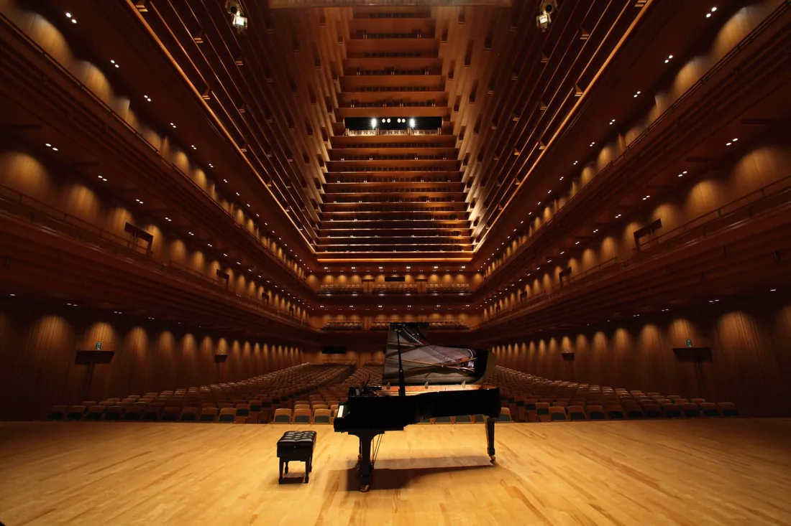</div>
</section>

<!-- 02 CONTENTS -->
<section class="page">
  <div class="lbl">Contents</div>
  <div class="hd">Everything the brand needs<span class="sc">and nothing more</span></div>
  <div class="content" style="grid-template-columns:1.5fr 1fr;margin-top:6mm">
    <div id="toc" style="display:grid;grid-template-columns:1fr 1fr;gap:0 10mm;align-content:start"></div>
    <div class="arch" style="height:100%">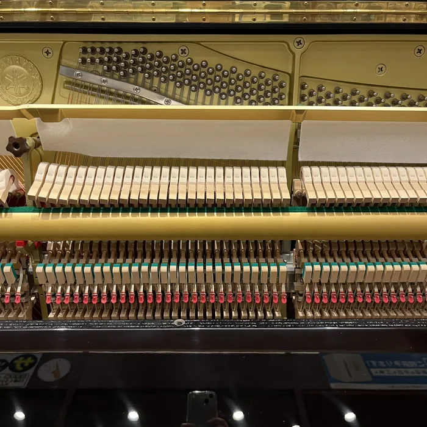</div>
  </div>
  <div class="ftr">Signature Pianos · Brand guidelines</div><div class="pno"></div>
</section>

<!-- 03 THE BRAND -->
<section class="page" data-toc="The brand">
  <div class="lbl">01 · The brand</div>
  <div class="hd">Hand-picked in Japan<span class="sc">checked in Melbourne</span></div>
  <div class="sub">Signature Pianos sells new and pre-loved Japanese acoustic pianos from a showroom in Mount Waverley. Every piano is chosen in Japan, imported direct and checked in our Melbourne workshop before it goes on the floor. These pages keep everything we make, on screen and on paper, looking like it came from the same room.</div>
  <div class="content" style="grid-template-columns:repeat(4,1fr);grid-template-rows:auto 1fr">
    <div class="panel"><span class="k">What we sell</span><h4>Japanese pianos, imported direct</h4><p>New and pre-loved Yamaha and Kawai uprights and grands, with the occasional European piano that comes through the same buyers. Each one is photographed in Japan before import.</p><p>Digital pianos come later. They stay out of the brand's front door until they are in stock.</p></div>
    <div class="panel"><span class="k">Who it is for</span><h4>People buying their first real piano</h4><p>Parents choosing for a child who has started lessons, usually on a phone, often at night. Adults coming back to the piano after years away. Serious students who know the model they want. People giving a piano as a gift.</p><p>None of them should need to know the jargon.</p></div>
    <div class="panel"><span class="k">How it should feel</span><h4>Light, quiet, unhurried</h4><p>Like a concert hall in daylight before anyone arrives: pale walls, one instrument, room to look at it. The pianos do the talking and the page stays out of their way.</p><p>Not the black-and-gold piano showroom. Not a music shop. Not an agency showreel.</p></div>
    <div class="panel iv"><span class="k">The one rule</span><h4>Lead with Japan</h4><p>Whatever a page, a letter or a post says first, the fact that each piano is chosen in Japan and checked in Melbourne is never more than a line away. It is the reason to buy from us.</p><p>When a question is not answered in these pages: lighter, quieter, fewer.</p></div>
    <div class="fill" style="position:relative;overflow:hidden">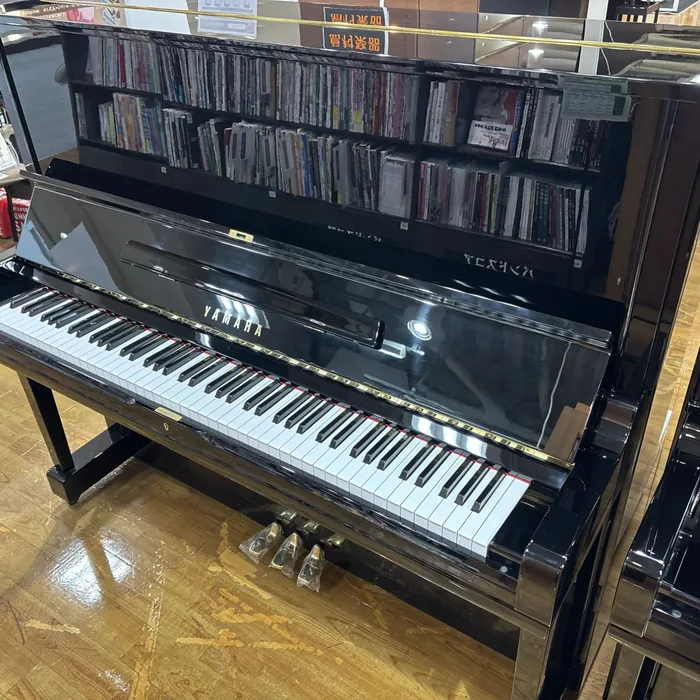</div>
    <div class="fill" style="position:relative;overflow:hidden">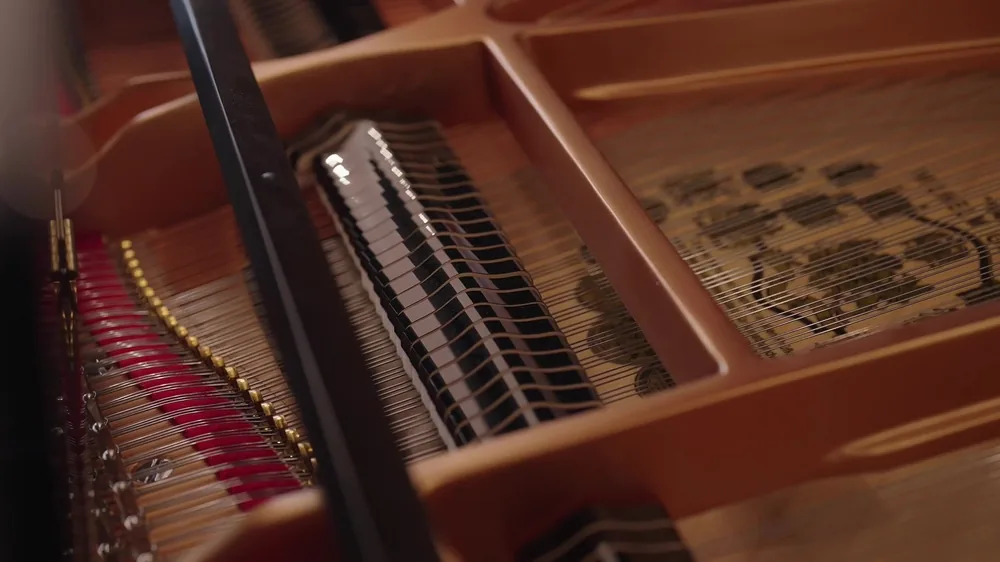</div>
    <div class="fill" style="position:relative;overflow:hidden"></div>
    <div class="fill" style="position:relative;overflow:hidden">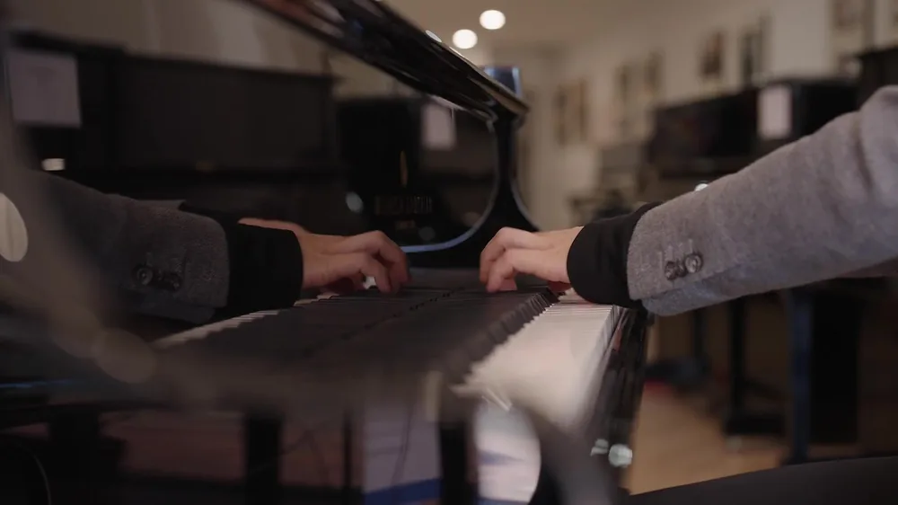</div>
  </div>
  <div class="ftr">Signature Pianos · Brand guidelines</div><div class="pno"></div>
</section>

<!-- 04 LOGO -->
<section class="page" data-toc="Logo">
  <div class="lbl">02 · Logo</div>
  <div class="hd">One lockup<span class="sc">two lines</span></div>
  <div class="sub">"Signature" in Italianno over "PIANOS" in Jost, tracked wide. This is the website header drawn as vector outlines, so it looks the same wherever it appears. Use the master files; never retype it.<span class="status">From the website</span></div>
  <div class="content" style="grid-template-rows:1fr auto">
    <div style="display:grid;grid-template-columns:repeat(3,1fr);gap:5mm">
      <div class="box" style="background:var(--ivory2)"><span class="tag">Ink on Key Ivory</span></div>
      <div class="box" style="background:var(--felt)"><span class="tag" style="color:var(--ivory)">Key Ivory on Hammer Felt</span></div>
      <div class="box fill">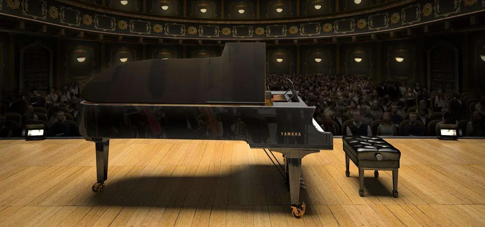<div style="position:absolute;inset:0;background:rgba(22,34,46,.42)"></div><span class="tag" style="color:#fff">White over a photograph, with a scrim</span></div>
    </div>
    <div style="display:grid;grid-template-columns:1.55fr 1fr 1fr;gap:5mm">
      <div class="panel" style="display:grid;grid-template-columns:62mm 1fr;gap:5mm;align-items:center">
        <div style="position:relative;width:62mm;height:28.6mm">
          <div style="position:absolute;inset:0;border:.25mm dashed #9FB3C4"></div>
          <div style="position:absolute;left:4.3mm;top:4.3mm;right:4.3mm;bottom:4.3mm;border:.25mm dashed #9FB3C4"></div>
          
          <span style="position:absolute;left:1mm;top:.6mm;font-size:5.4pt;color:#5B7A93">2x</span>
        </div>
        <div><h4>Clear space</h4><p>x is the height of the capitals in PIANOS. Keep 2x clear on every side, measured from the outermost ink, including the tail of the g.</p></div>
      </div>
      <div class="panel"><h4>Minimum size</h4><div class="spec"><b>Screen</b><span>120 px wide. Below 150 px the website sets PIANOS at 9 px so it stays readable.</span><b>Print</b><span>30 mm wide.</span><b>Smaller</b><span>Use the monogram.</span></div></div>
      <div class="panel"><h4>Which version</h4><div class="spec"><b>Ink</b><span>On Key Ivory, White and both Mists</span><b>Key Ivory</b><span>On Ink and Hammer Felt</span><b>White</b><span>Over photographs, with a scrim of at least 35% Ink</span><b>Black</b><span>Single-colour print only: stamps, engraving, newspaper</span></div></div>
    </div>
  </div>
  <div class="ftr">Signature Pianos · Brand guidelines</div><div class="pno"></div>
</section>

<!-- 05 WORDMARK AND MONOGRAM -->
<section class="page" data-toc="Wordmark and monogram">
  <div class="lbl">03 · Wordmark and monogram</div>
  <div class="hd">The name<span class="sc">and its initial</span></div>
  <div class="sub">The wordmark is "Signature" on its own, for places that already say "pianos": the fallboard decal, a piano cover, the hero of a page about pianos. The monogram is the script S inside the arch, the shape the website uses to frame its photographs. It carries the brand where the name cannot be read.</div>
  <div class="content" style="grid-template-columns:1fr 1fr 1.25fr">
    <div class="panel" style="display:flex;flex-direction:column">
      <span class="k">Wordmark</span>
      <div class="box" style="flex:1;background:var(--ivory2)"></div>
      <div class="spec" style="margin-top:4mm"><b>Use</b><span>Where "pianos" is already said nearby</span><b>Never</b><span>As the only mark on a letterhead, card or invoice. Those carry the full lockup.</span></div>
    </div>
    <div class="panel" style="display:flex;flex-direction:column">
      <span class="k">Monogram <span class="status p">New in this kit</span></span>
      <div style="flex:1;display:grid;grid-template-columns:1fr 1fr;gap:3mm">
        <div class="box" style="background:var(--ivory2)">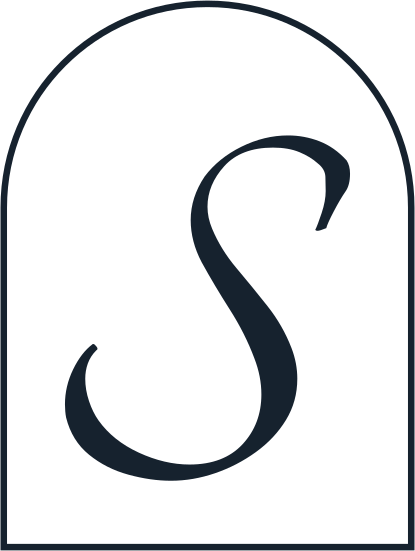</div>
        <div class="box" style="background:var(--felt)">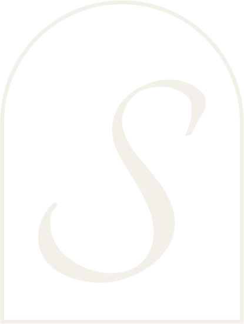</div>
      </div>
      <div class="spec" style="margin-top:4mm"><b>Use</b><span>Favicon, avatars, the foot of the letterhead, the card back, stamps and seals</span><b>Arch</b><span>3 : 4, a semicircular top, a hairline 1.6% of its width</span></div>
    </div>
    <div class="panel" style="display:flex;flex-direction:column">
      <span class="k">Tiles and icons</span>
      <div style="flex:1;display:flex;align-items:center;justify-content:space-around;gap:3mm">
        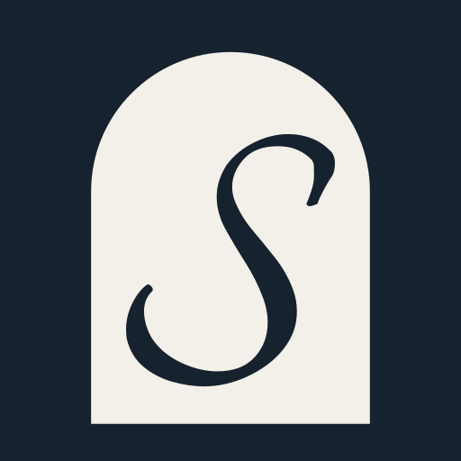
        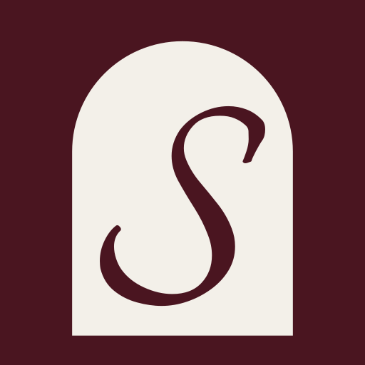
        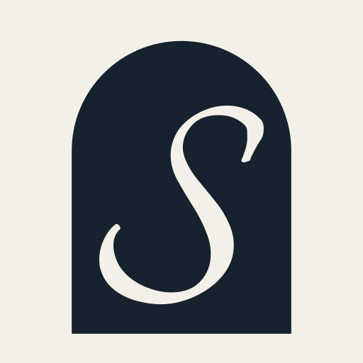
        
      </div>
      <div class="spec" style="margin-top:4mm"><b>Ink tile</b><span>Favicon, app icon, Google Business Profile</span><b>Felt tile</b><span>Instagram and Facebook avatars</span><b>Ivory tile</b><span>Where the ground is already dark</span><b>Files</b><span>favicon.svg, 16 / 32 / 48 px, apple-touch-icon 180, 192 and 512 px, 1080 px avatars</span></div>
    </div>
  </div>
  <div class="ftr">Signature Pianos · Brand guidelines</div><div class="pno"></div>
</section>

<!-- 06 MISUSE -->
<section class="page" data-toc="Logo misuse">
  <div class="lbl">04 · Logo misuse</div>
  <div class="hd">Eight ways<span class="sc">to spoil it</span></div>
  <div class="sub">Each of these has happened to a piano dealer's logo somewhere. None of them happens to ours.</div>
  <div class="content" style="grid-template-columns:repeat(4,1fr);grid-template-rows:1fr 1fr">
    <div class="panel" style="display:flex;flex-direction:column"><div class="box" style="flex:1;flex-direction:column;background:var(--ivory)"><div style="font-family:'Segoe Script','Brush Script MT',cursive;font-size:22pt;color:var(--ink);line-height:1">Signature</div><div style="font-family:Arial;font-weight:700;font-size:6pt;letter-spacing:.1em;color:var(--ink);margin-top:1mm">PIANOS</div></div><p class="cap"><b class="never">1</b> &nbsp;Retyped in another script or sans. Always use the master files.</p></div>
    <div class="panel" style="display:flex;flex-direction:column"><div class="box" style="flex:1;background:var(--ivory)"></div><p class="cap"><b class="never">2</b> &nbsp;Recoloured, gold above all. The logo is Ink, Key Ivory, White or Black.</p></div>
    <div class="panel" style="display:flex;flex-direction:column"><div class="box" style="flex:1;background:var(--ivory)"></div><p class="cap"><b class="never">3</b> &nbsp;Stretched or squashed. Scale it by its corner only.</p></div>
    <div class="panel" style="display:flex;flex-direction:column"><div class="box" style="flex:1;background:var(--ivory);gap:2.5mm"><span style="font-family:Jost;font-weight:500;font-size:11pt;letter-spacing:.05em;color:var(--ink)">PIANOS</span></div><p class="cap"><b class="never">4</b> &nbsp;PIANOS moved, enlarged or reset. It sits centred under the script at 10 : 58.</p></div>
    <div class="panel" style="display:flex;flex-direction:column"><div class="box" style="flex:1;background:var(--ivory)"></div><p class="cap"><b class="never">5</b> &nbsp;Given a shadow, glow, outline, bevel or gradient.</p></div>
    <div class="panel" style="display:flex;flex-direction:column"><div class="box fill" style="flex:1"></div><p class="cap"><b class="never">6</b> &nbsp;Placed on a busy photograph with no scrim behind it.</p></div>
    <div class="panel" style="display:flex;flex-direction:column"><div class="box" style="flex:1;background:var(--ivory)"></div><p class="cap"><b class="never">7</b> &nbsp;Set in a pale colour that cannot be read. Mist on Key Ivory is 1.4 : 1.</p></div>
    <div class="panel" style="display:flex;flex-direction:column"><div class="box" style="flex:1;background:var(--ivory)"></div><p class="cap"><b class="never">8</b> &nbsp;Rotated, set on a curve or animated letter by letter.</p></div>
  </div>
  <div class="ftr">Signature Pianos · Brand guidelines</div><div class="pno"></div>
</section>

<!-- 07 COLOUR -->
<section class="page" data-toc="Colour">
  <div class="lbl">05 · Colour</div>
  <div class="hd">Taken from<span class="sc">the piano</span></div>
  <div class="sub">Ink is the lacquer, Key Ivory the keys, Mist the light in a hall, Hammer Felt the strip of red felt under the fallboard. Eight colours in all, with one accent. There is no gold.</div>
  <div class="content" style="grid-template-columns:repeat(4,1fr);grid-template-rows:1fr 1fr;gap:4mm">
    <div class="panel" style="padding:0;display:flex;flex-direction:column"><div style="height:17mm;background:#16222E"></div><div style="padding:3mm 4mm"><h4>Ink</h4><div class="cap" style="margin:0 0 1.4mm">#16222E · R22 G34 B46 · C52 M26 Y0 K82</div><p>The logo, headlines, buttons. Our black.</p><p class="never">Never pure #000000 on screen.</p></div></div>
    <div class="panel" style="padding:0;display:flex;flex-direction:column"><div style="height:17mm;background:#3A4855"></div><div style="padding:3mm 4mm"><h4>Ink Soft</h4><div class="cap" style="margin:0 0 1.4mm">#3A4855 · R58 G72 B85 · C32 M15 Y0 K67</div><p>Body text, labels, captions.</p><p class="never">Never for the logo or buttons.</p></div></div>
    <div class="panel" style="padding:0;display:flex;flex-direction:column"><div style="height:17mm;background:#F3F0E9;box-shadow:inset 0 0 0 .25mm var(--rule)"></div><div style="padding:3mm 4mm"><h4>Key Ivory</h4><div class="cap" style="margin:0 0 1.4mm">#F3F0E9 · R243 G240 B233 · C0 M1 Y4 K5</div><p>The page. Every screen and sheet starts here.</p><p class="never">Never swapped for a cool white.</p></div></div>
    <div class="panel" style="padding:0;display:flex;flex-direction:column"><div style="height:17mm;background:#E9E5DB;box-shadow:inset 0 0 0 .25mm var(--rule)"></div><div style="padding:3mm 4mm"><h4>Ivory Deep</h4><div class="cap" style="margin:0 0 1.4mm">#E9E5DB · R233 G229 B219 · C0 M2 Y6 K9</div><p>Panels, image frames while photos load, hairlines on ivory.</p><p class="never">Never for text.</p></div></div>
    <div class="panel" style="padding:0;display:flex;flex-direction:column"><div style="height:17mm;background:#BCCEDA"></div><div style="padding:3mm 4mm"><h4>Mist</h4><div class="cap" style="margin:0 0 1.4mm">#BCCEDA · R188 G206 B218 · C14 M6 Y0 K15</div><p>One large shape per page: the arch, a band.</p><p class="never">Never for text or the logo.</p></div></div>
    <div class="panel" style="padding:0;display:flex;flex-direction:column"><div style="height:17mm;background:#DCE6ED;box-shadow:inset 0 0 0 .25mm var(--rule)"></div><div style="padding:3mm 4mm"><h4>Mist Light</h4><div class="cap" style="margin:0 0 1.4mm">#DCE6ED · R220 G230 B237 · C7 M3 Y0 K7</div><p>Alternate section ground: the collection, the matcher, the top bar.</p><p class="never">Never two Mist sections in a row.</p></div></div>
    <div class="panel" style="padding:0;display:flex;flex-direction:column"><div style="height:17mm;background:#4A1520"></div><div style="padding:3mm 4mm"><h4>Hammer Felt</h4><div class="cap" style="margin:0 0 1.4mm">#4A1520 · R74 G21 B32 · C0 M72 Y57 K71</div><p>The one accent: a block, a pin, a short rule, the card back.</p><p class="never">Never for buttons, links or body text.</p></div></div>
    <div class="panel" style="padding:0;display:flex;flex-direction:column"><div style="height:17mm;background:#FFFFFF;box-shadow:inset 0 0 0 .25mm var(--rule)"></div><div style="padding:3mm 4mm"><h4>White</h4><div class="cap" style="margin:0 0 1.4mm">#FFFFFF · R255 G255 B255 · C0 M0 Y0 K0</div><p>Type and the logo over photographs; button labels; letter paper.</p><p class="never">Never as a page ground on screen.</p></div></div>
  </div>
  <div class="ftr">Signature Pianos · Brand guidelines · CMYK values are conversions; proof against the RGB master before print</div><div class="pno"></div>
</section>

<!-- 08 COLOUR IN USE -->
<section class="page" data-toc="Colour in use">
  <div class="lbl">06 · Colour in use</div>
  <div class="hd">Mostly ivory<span class="sc">a little felt</span></div>
  <div class="sub">The page is ivory. Ink carries the words. Mist makes one big shape. Felt appears once, small, the way the felt strip does on a real piano.</div>
  <div class="content" style="grid-template-columns:1.1fr 1fr 1fr">
    <div class="panel" style="display:flex;flex-direction:column;gap:4mm">
      <div><h4>Proportion</h4><div style="display:flex;height:10mm;margin-top:2mm;border:.25mm solid var(--rule)"><div style="flex:60;background:#F3F0E9"></div><div style="flex:20;background:#DCE6ED"></div><div style="flex:5;background:#BCCEDA"></div><div style="flex:10;background:#16222E"></div><div style="flex:5;background:#4A1520"></div></div><div class="cap">60 Key Ivory · 20 Mist Light · 5 Mist · 10 Ink · 5 Hammer Felt, by area of flat colour. Photographs sit on top.</div></div>
      <div class="fill" style="flex:1;position:relative;overflow:hidden"></div>
      <div class="cap" style="margin:0">The felt under the fallboard: where Hammer Felt comes from, and how much of it to use.</div>
    </div>
    <div class="panel">
      <h4>Contrast</h4>
      <table style="margin-top:2mm">
        <tr><th>Text</th><th>Ground</th><th>Ratio</th></tr>
        <tr><td><b>Ink</b></td><td>Key Ivory</td><td>14.2 : 1</td></tr>
        <tr><td><b>Ink</b></td><td>White</td><td>16.1 : 1</td></tr>
        <tr><td><b>Ink</b></td><td>Mist</td><td>10.0 : 1</td></tr>
        <tr><td><b>Ink</b></td><td>Mist Light</td><td>12.7 : 1</td></tr>
        <tr><td><b>Ink Soft</b></td><td>Key Ivory</td><td>8.2 : 1</td></tr>
        <tr><td><b>Ink Soft</b></td><td>Mist Light</td><td>7.4 : 1</td></tr>
        <tr><td><b>Key Ivory</b></td><td>Hammer Felt</td><td>13.0 : 1</td></tr>
        <tr><td><b>Key Ivory</b></td><td>Ink</td><td>14.2 : 1</td></tr>
        <tr><td><b class="never">Mist</b></td><td>Key Ivory</td><td class="never">1.4 : 1, never</td></tr>
      </table>
      <div class="cap">Every text pairing we use passes WCAG AAA (7 : 1) for body text.</div>
    </div>
    <div class="panel iv">
      <h4>Retired</h4>
      <p>The dark theme is gone. If any of these turn up on a page, a document or a post, replace them.</p>
      <div style="display:grid;grid-template-columns:9mm 1fr;gap:2.4mm 3mm;align-items:center;margin-top:3mm;font-size:7.3pt">
        <div style="height:7mm;background:#B8935A"></div><span><b style="font-weight:500;color:var(--ink)">Gold #B8935A, #D4B483</b><br>Use Ink for buttons, Felt for accents.</span>
        <div style="height:7mm;background:#0E0E0D"></div><span><b style="font-weight:500;color:var(--ink)">Studio black #0E0E0D</b><br>Pages are Key Ivory now.</span>
        <div style="height:7mm;background:#FAFBFB;border:.25mm solid var(--rule)"></div><span><b style="font-weight:500;color:var(--ink)">Porcelain #FAFBFB</b><br>Becomes Key Ivory.</span>
        <div style="height:7mm;background:#2D628C"></div><span><b style="font-weight:500;color:var(--ink)">Steel #2D628C, Slate #5E6F80</b><br>Become Ink and Ink Soft.</span>
      </div>
    </div>
  </div>
  <div class="ftr">Signature Pianos · Brand guidelines</div><div class="pno"></div>
</section>

<!-- 09 TYPOGRAPHY -->
<section class="page" data-toc="Typography">
  <div class="lbl">07 · Typography</div>
  <div class="hd">Three faces<span class="sc">three jobs</span></div>
  <div class="sub">A script for the name, condensed capitals for headlines, a clean sans for everything read. All three are free under the SIL Open Font License: install them, embed them, send them to the printer.</div>
  <div class="content" style="grid-template-columns:1fr 1.3fr 1fr">
    <div class="panel" style="display:flex;flex-direction:column">
      <span class="k">Script · Italianno</span>
      <div style="font-family:Italianno;font-size:62pt;line-height:1;color:var(--ink);flex:1;display:flex;align-items:center">Signature</div>
      <div class="spec"><b>Weight</b><span>Regular 400</span><b>Case</b><span>As written, never capitals</span><b>Leading</b><span>100%</span><b>Tracking</b><span>0</span><b>Use</b><span>The wordmark, and one crossing word or phrase (three words at most) per heading</span><b>Smallest</b><span>40 px on screen, 24 pt in print</span><b>Fallback</b><span>Snell Roundhand, Apple Chancery, cursive</span></div>
    </div>
    <div class="panel" style="display:flex;flex-direction:column">
      <span class="k">Display · Noto Serif Display, ExtraCondensed</span>
      <div style="font-family:'SP Display';font-weight:500;text-transform:uppercase;font-size:46pt;line-height:.88;color:var(--ink);flex:1;display:flex;align-items:center;white-space:nowrap">Yamaha U3H<br>Kawai K-300</div>
      <div class="spec"><b>Weight</b><span>Medium 500 at width 62.5 (the ExtraCondensed instance)</span><b>Case</b><span>Always capitals</span><b>Leading</b><span>86–90%</span><b>Tracking</b><span>−0.5%</span><b>Use</b><span>Headlines, piano names on cards, big numbers</span><b>Fallback</b><span>Bodoni Moda, Didot, Georgia, serif</span></div>
    </div>
    <div class="panel" style="display:flex;flex-direction:column">
      <span class="k">Text · Jost</span>
      <div style="flex:1;display:flex;flex-direction:column;justify-content:center;color:var(--ink)"><div style="font-size:20pt;line-height:1.15">Hand-picked in Japan, checked in Melbourne.</div><div style="font-size:6.6pt;letter-spacing:.3em;text-transform:uppercase;margin-top:4mm">Book a visit · Enquire</div></div>
      <div class="spec"><b>Weights</b><span>Regular 400 for reading, Medium 500 for buttons and names, Light 300 for print body</span><b>Body</b><span>17 px, leading 170%, 44–60 characters a line</span><b>Labels</b><span>12 px capitals, tracking 0.3 em</span><b>Fallback</b><span>Helvetica Neue, Arial, sans-serif</span></div>
    </div>
  </div>
  <div class="ftr">Signature Pianos · Brand guidelines · Retired: Cormorant Garamond, Josefin Sans, DM Sans</div><div class="pno"></div>
</section>

<!-- 10 HIERARCHY -->
<section class="page" data-toc="Headings and sizes">
  <div class="lbl">08 · Headings and sizes</div>
  <div class="hd">The crossing<span class="sc">heading</span></div>
  <div class="sub">The site's one typographic device. Condensed capitals state the thing; a script word crosses underneath to say how. Script and capitals are set at about the same size, and the script is pulled up by a third of its size so it overlaps.</div>
  <div class="content" style="grid-template-columns:1.2fr 1fr">
    <div class="panel mi" style="display:flex;flex-direction:column;align-items:center;justify-content:center;text-align:center">
      <div style="font-family:'SP Display';font-weight:500;font-size:64pt;line-height:.86;text-transform:uppercase;color:var(--ink)">Upright pianos</div>
      <div style="font-family:Italianno;font-size:62pt;line-height:1;color:var(--ink);margin-top:-.32em">hand-picked</div>
      <div style="font-size:8.6pt;line-height:1.7;max-width:80mm;margin-top:3mm">Every pre-loved upright is one of a kind. These were photographed in Japan before import.</div>
      <div class="cap" style="margin-top:5mm">Capitals clamp(56 px, 8.4 vw, 150 px) · script clamp(64 px, 8 vw, 138 px), margin-top −0.32 em</div>
    </div>
    <div class="panel">
      <h4>Sizes</h4>
      <table style="margin-top:2mm">
        <tr><th>Role</th><th>Screen</th><th>Print</th></tr>
        <tr><td><b>Hero capitals</b></td><td>56–152 px, leading 90%</td><td>60–80 pt</td></tr>
        <tr><td><b>Section capitals</b></td><td>56–150 px, leading 86%</td><td>34–48 pt</td></tr>
        <tr><td><b>Crossing script</b></td><td>64–138 px, pulled up 0.32 em</td><td>Same size as the capitals</td></tr>
        <tr><td><b>Card title</b></td><td>30 px capitals</td><td>14–18 pt</td></tr>
        <tr><td><b>Body</b></td><td>17 px, leading 170%</td><td>9.5–10 pt, leading 155%</td></tr>
        <tr><td><b>Lead paragraph</b></td><td>17–21 px</td><td>11–12 pt</td></tr>
        <tr><td><b>Label</b></td><td>12 px caps, 0.3 em</td><td>6.4 pt caps, 0.2–0.3 em</td></tr>
        <tr><td><b>Button</b></td><td>12.5 px Medium caps, 0.2 em</td><td>n/a</td></tr>
      </table>
      <div class="cap">Ratio: section capitals are about nine times the body size. Sentences are sentence case; only labels and display lines are capitals.</div>
    </div>
  </div>
  <div class="ftr">Signature Pianos · Brand guidelines</div><div class="pno"></div>
</section>

<!-- 11 PHOTOGRAPHY -->
<section class="page" data-toc="Photography">
  <div class="lbl">09 · Photography</div>
  <div class="hd">The real piano<span class="sc">in good light</span></div>
  <div class="sub">Four kinds of picture. The most important is the plainest: the actual piano for sale, photographed in Japan before import, exactly as it is. People trust a real photo of a real piano more than a beautiful one of a different piano.</div>
  <div class="content" style="grid-template-columns:repeat(4,1fr)">
    <div style="display:flex;flex-direction:column;gap:3mm"><div class="arch" style="flex:1">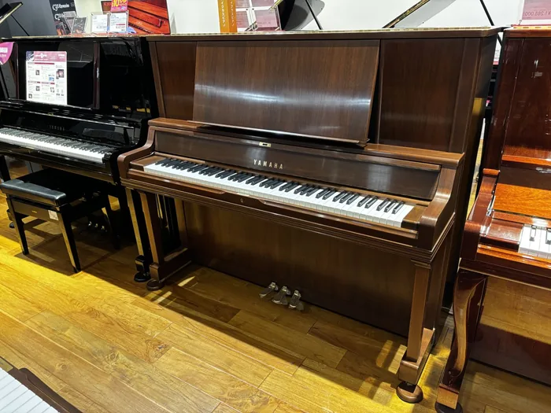</div><div><h4 style="margin:0 0 1mm;font-weight:500;font-size:9pt;color:var(--ink)">The piano itself</h4><p class="cap" style="margin:0">Straight on, whole instrument, lid closed, keys visible. Shot where it stands. The serial-numbered piano we are selling, never a stand-in.</p></div></div>
    <div style="display:flex;flex-direction:column;gap:3mm"><div class="arch" style="flex:1">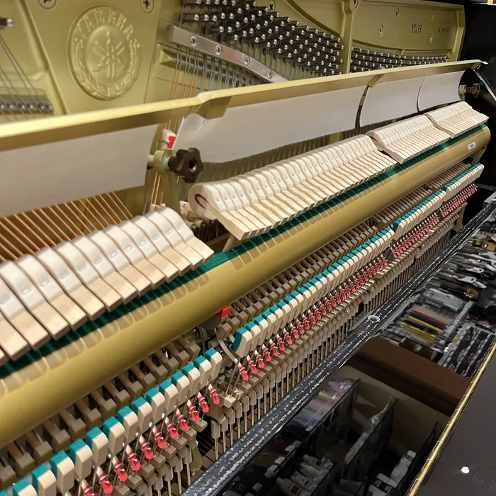</div><div><h4 style="margin:0 0 1mm;font-weight:500;font-size:9pt;color:var(--ink)">The craft</h4><p class="cap" style="margin:0">Action, hammers, strings, pedals, close and sharp. Warm, natural light. Shows what the workshop checks.</p></div></div>
    <div style="display:flex;flex-direction:column;gap:3mm"><div class="arch" style="flex:1"></div><div><h4 style="margin:0 0 1mm;font-weight:500;font-size:9pt;color:var(--ink)">The hall</h4><p class="cap" style="margin:0">One piano in a large, calm room. For heroes and section openers only, and only with a confirmed licence.</p></div></div>
    <div style="display:flex;flex-direction:column;gap:3mm"><div class="arch" style="flex:1"></div><div><h4 style="margin:0 0 1mm;font-weight:500;font-size:9pt;color:var(--ink)">The hands</h4><p class="cap" style="margin:0">Someone playing, a lesson, a first try in the showroom. Real customers and teachers, with their permission.</p></div></div>
  </div>
  <div class="panel iv" style="margin-top:4mm;padding:3.4mm 5mm;display:grid;grid-template-columns:auto 1fr;gap:5mm;align-items:center"><span class="k" style="margin:0;color:var(--felt)">Never</span><span style="font-size:7.5pt">Stock families smiling at a keyboard · a piano shown as ours that is not in stock · gold light leaks, lens flare, heavy filters · the black studio backdrop of the old site · AI-generated pianos presented as real · watermarks, phone-flash glare, clutter left in frame</span></div>
  <div class="ftr">Signature Pianos · Brand guidelines</div><div class="pno"></div>
</section>

<!-- 12 VOICE -->
<section class="page" data-toc="Voice">
  <div class="lbl">10 · Voice</div>
  <div class="hd">Plain words<span class="sc">real facts</span></div>
  <div class="sub">We sound like a good piano technician explaining things to a parent: patient, exact, never selling. Australian English. Numbers as numerals. "Pre-loved", not "used" or "second-hand".</div>
  <div class="content" style="grid-template-rows:1fr auto">
    <table style="font-size:8.4pt;align-self:start">
      <tr><th style="width:44mm">Rule</th><th>Say</th><th>Not</th></tr>
      <tr><td><b>1 · Lead with Japan</b></td><td>"Hand-picked in Japan, checked in our Mount Waverley workshop."</td><td>"Melbourne's best piano store."</td></tr>
      <tr><td><b>2 · Name the piano</b></td><td>"Yamaha YUS5, 2008, walnut. In the showroom now."</td><td>"Stunning premium upright in amazing condition!"</td></tr>
      <tr><td><b>3 · Explain once, simply</b></td><td>"A silent system lets you play with headphones, so the house stays quiet."</td><td>"Features SH2 silent technology with CFX binaural sampling."</td></tr>
      <tr><td><b>4 · Reassure with facts</b></td><td>"10-year warranty. First tuning included, three to four weeks after delivery."</td><td>"Total peace of mind, guaranteed."</td></tr>
      <tr><td><b>5 · Real people, real reviews</b></td><td>A Google review, quoted word for word, with the reviewer's name as it appears there.</td><td>Invented testimonials, or reviews rewritten to sound better. Australian Consumer Law treats both as misleading.</td></tr>
      <tr><td><b>6 · One next step</b></td><td>"Book a visit." One primary action per page, repeated at the end.</td><td>Three competing buttons in the hero.</td></tr>
    </table>
    <div style="display:grid;grid-template-columns:1fr 1fr 1.3fr;gap:5mm">
      <div class="panel"><span class="k">Words we use</span><p>pre-loved · hand-picked · imported direct · checked in our workshop · showroom · play it · book a visit · first tuning included · white-glove delivery</p></div>
      <div class="panel"><span class="k" style="color:var(--felt)">Words we avoid</span><p>used · second-hand · cheap · bargain · best · world-class · unbeatable · stunning · amazing · exclamation marks · "Buy now"</p></div>
      <div class="panel iv"><span class="k">House style</span><div class="spec" style="grid-template-columns:16mm 1fr"><b>Spelling</b><span>Australian: colour, centre, licence, jewellery</span><b>Prices</b><span>$8,900, no cents; "Price on request" while a piano is in the workshop</span><b>Dates</b><span>19 September 2026 · 10 am · 0479 128 955</span><b>Models</b><span>Maker, model, year, finish: Yamaha U3H, 1981, polished ebony</span></div></div>
    </div>
  </div>
  <div class="ftr">Signature Pianos · Brand guidelines</div><div class="pno"></div>
</section>

<!-- 13 WEBSITE COMPONENTS -->
<section class="page" data-toc="Website: components">
  <div class="lbl">11 · Design in use</div>
  <div class="hd">The website<span class="sc">its pieces</span></div>
  <div class="sub">Square corners everywhere. The only curves are the arch and the circle. Buttons are filled Ink and turn to an outline on hover; nothing bounces.</div>
  <div class="content" style="grid-template-columns:repeat(3,1fr);grid-template-rows:1fr 1fr">
    <div class="panel"><span class="k">Buttons</span><div style="display:flex;gap:3mm;flex-wrap:wrap;align-items:center"><span class="btn">Book a visit</span><span class="btn out">Book a visit</span></div><div style="background:#16222E;padding:3mm;margin-top:3mm;display:flex"><span class="btn wh">Book a visit</span></div><p class="cap">Filled Ink; on hover the fill fades to an outline over 0.4 s. White over photographs. Jost Medium 12.5 px capitals, 0.2 em. One filled button per screen.</p></div>
    <div class="panel"><span class="k">Text links</span><div style="display:flex;flex-direction:column;gap:4mm;align-items:flex-start"><span class="tl">View the collection <span>→</span></span><span style="font-size:6.6pt;letter-spacing:.18em;text-transform:uppercase;color:var(--ink)">Browse every teacher <span>→</span></span></div><p class="cap">Capitals, 0.18 em, an arrow. On hover a hairline draws in underneath (0.6 s) and the arrow moves 6 px right.</p></div>
    <div class="panel" style="display:grid;grid-template-columns:auto 1fr;gap:4mm;align-items:center"><div style="position:relative;width:24mm;height:24mm"><svg viewBox="0 0 132 132" style="position:absolute;inset:0;width:100%;height:100%"><defs><path id="rg" d="M66,66 m-52,0 a52,52 0 1,1 104,0 a52,52 0 1,1 -104,0"/></defs><text style="font-family:Jost;font-size:10px;letter-spacing:.2em;text-transform:uppercase;fill:#16222E"><textPath href="#rg">View the collection · Japanese pianos ·</textPath></text></svg><div style="position:absolute;left:50%;top:50%;width:11.6mm;height:11.6mm;margin:-5.8mm 0 0 -5.8mm;border:.25mm solid var(--ink);border-radius:50%;display:flex;align-items:center;justify-content:center;color:var(--ink);font-size:9pt">↓</div></div><div><span class="k">The ring</span><p class="cap" style="margin:0">A 132 px circle with its label set around the edge, turning once every 22 s. Once per page, in the hero.</p></div></div>
    <div class="panel" style="display:grid;grid-template-columns:30mm 1fr;gap:4mm"><div class="arch">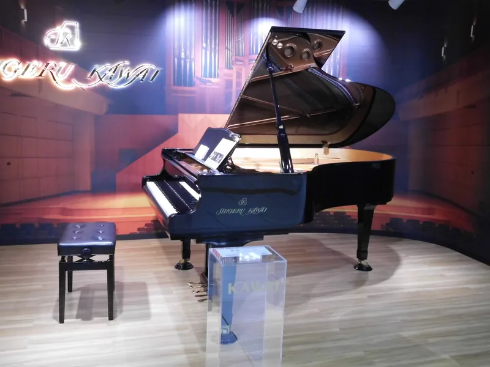</div><div><span class="k">The arch</span><p class="cap" style="margin:0">A frame with a semicircular top, for feature photos and the big Mist shape that rises out of the hero. At most two per screen. The monogram is drawn from it.</p></div></div>
    <div class="panel"><span class="k">Labels and cards</span><div style="font-size:5.8pt;letter-spacing:.3em;text-transform:uppercase;color:var(--ink2)">Hand-picked in Japan — Checked in Melbourne</div><div style="display:grid;grid-template-columns:1fr auto;align-items:end;margin-top:4mm;border-top:.25mm solid var(--rule);padding-top:2.4mm"><div><div style="font-family:'SP Display';font-weight:500;font-size:15pt;line-height:.9;text-transform:uppercase;color:var(--ink)">Yamaha B121 SC2</div><div style="font-size:6.8pt;margin-top:1mm">2018 · Upright with silent system</div></div><span style="font-size:5.6pt;letter-spacing:.24em;text-transform:uppercase;color:var(--ink)">Enquire</span></div><p class="cap">Cards have no box: photo, a hairline, the name in capitals, one line of facts, one action.</p></div>
    <div class="panel iv"><span class="k">Motion</span><div class="spec"><b>Curve</b><span>cubic-bezier(.4, 0, .1, 1) for movement</span><b>Fades</b><span>0.4 s linear for colour and opacity</span><b>Reveals</b><span>Headlines rise line by line; photos grow to full bleed as you scroll</span><b>Never</b><span>Bounce, parallax on text, autoplay sound, anything that ignores "reduce motion"</span></div></div>
  </div>
  <div class="ftr">Signature Pianos · Brand guidelines</div><div class="pno"></div>
</section>

<!-- 14 WEBSITE AT WORK -->
<section class="page" data-toc="Website: at work">
  <div class="lbl">11 · Design in use</div>
  <div class="hd">The website<span class="sc">at work</span></div>
  <div class="sub">signaturepianos.com.au, 19 September 2026. The hall photograph opens the page, the Mist arch rises out of it with the three reasons to buy, then the real pianos, photographed in Japan.</div>
  <div class="content" style="grid-template-columns:96mm 96mm 1fr;grid-template-rows:60mm 60mm;align-content:start">
    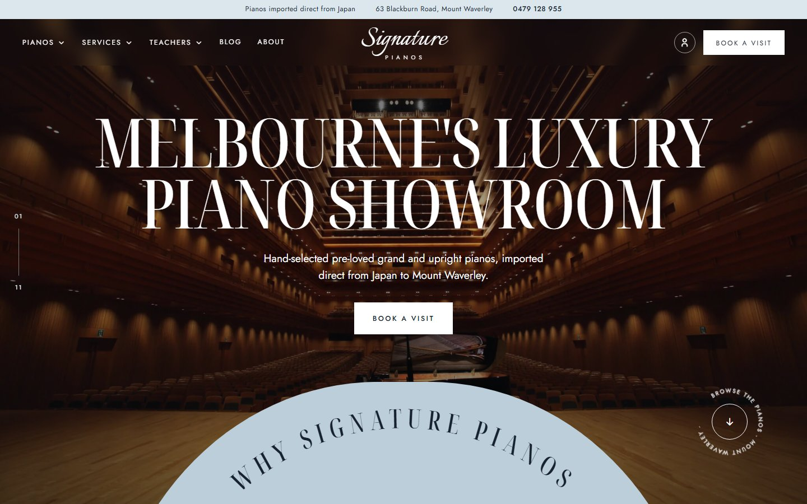
    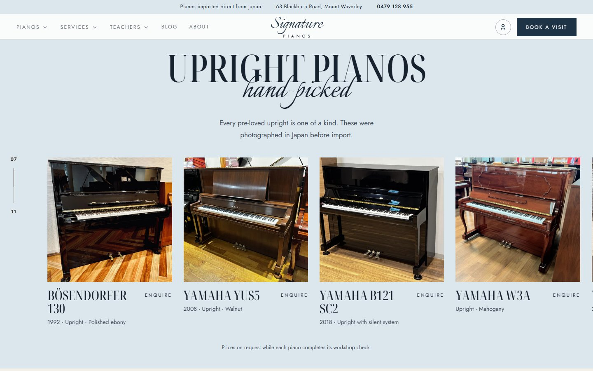
    <div class="cap" style="margin:0;align-self:end"><b style="font-weight:500;color:var(--ink)">Hero.</b> The hall photograph, condensed capitals, one line on the import, one button. The script lockup leads the header.<br><br><b style="font-weight:500;color:var(--ink)">Collection.</b> Mist Light ground, a crossing heading, then each real piano with its year, type and finish.</div>
    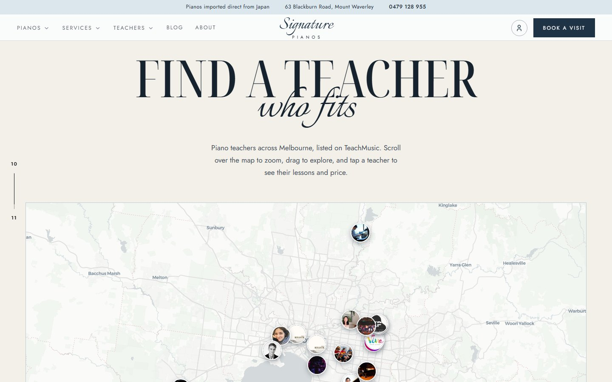
    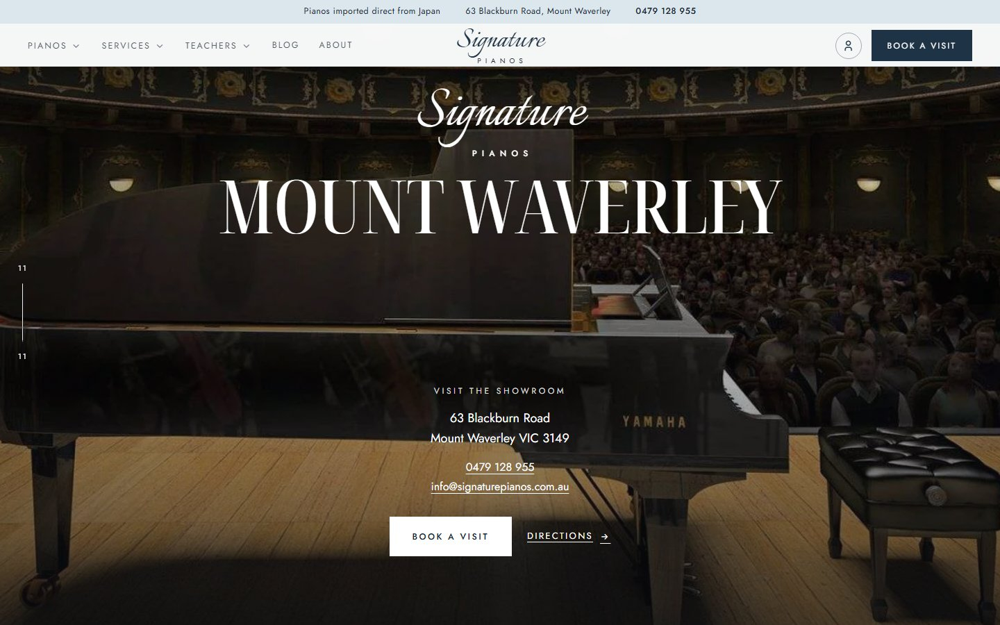
    <div class="cap" style="margin:0;align-self:end"><b style="font-weight:500;color:var(--ink)">Teachers.</b> Key Ivory ground, the crossing heading, a quiet map. Pins turn Hammer Felt when chosen.<br><br><b style="font-weight:500;color:var(--ink)">Visit.</b> The closing section: a photograph, the lockup in white, the address and the one action again.</div>
  </div>
  <div class="ftr">Signature Pianos · Brand guidelines</div><div class="pno"></div>
</section>

<!-- 15 STATIONERY -->
<section class="page" data-toc="Stationery">
  <div class="lbl">12 · Design in use</div>
  <div class="hd">On paper<span class="sc">and in the inbox</span></div>
  <div class="sub">The letterhead centres the lockup like the website header, with a short felt rule under it. The card is ivory on the front and felt on the back. The email signature is the lockup, the facts and one tracked line.</div>
  <div class="content" style="grid-template-columns:84mm 1fr">
    <div style="width:84mm;height:118.8mm;background:#fff;box-shadow:0 1mm 4mm rgba(22,34,46,.12)">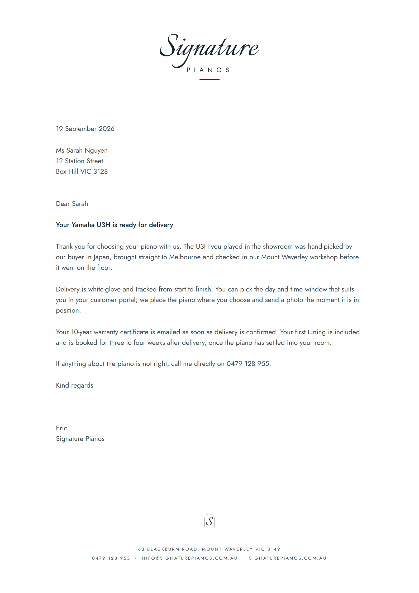</div>
    <div style="display:grid;grid-template-rows:auto auto 1fr;gap:4mm;min-height:0">
      <div style="display:grid;grid-template-columns:1fr 1fr;gap:4mm">
        <div><div style="aspect-ratio:96/61;overflow:hidden;box-shadow:0 1mm 4mm rgba(22,34,46,.12)">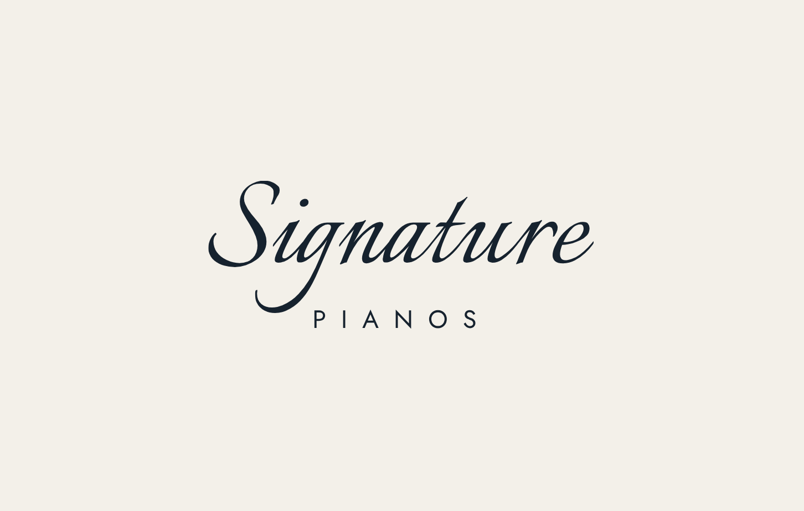</div><p class="cap">Card front · 90 × 55 mm, 3 mm bleed</p></div>
        <div><div style="aspect-ratio:96/61;overflow:hidden;box-shadow:0 1mm 4mm rgba(22,34,46,.12)">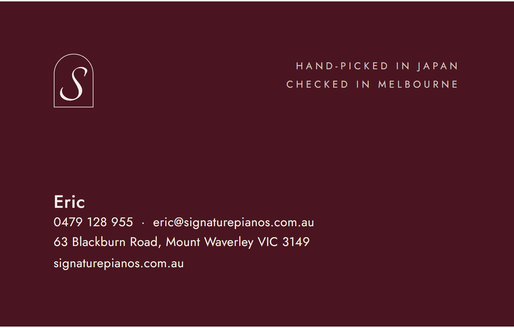</div><p class="cap">Card back · Key Ivory on Hammer Felt</p></div>
      </div>
      <div class="panel" style="padding:3mm 4mm">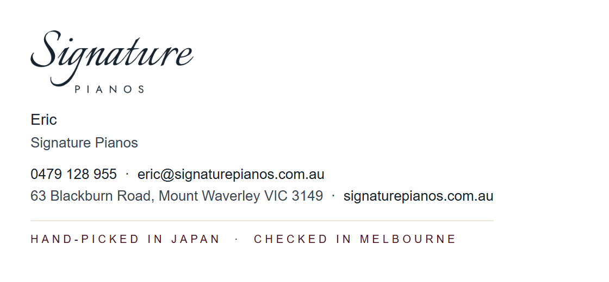</div>
      <div class="panel iv"><div class="spec"><b>Letter</b><span>A4. Lockup 50 mm wide, 17 mm from the top. Body Jost 9.8 pt on 15 pt, Ink Soft, 28 mm side margins. Monogram and address in 6.4 pt tracked capitals at the foot.</span><b>Paper</b><span>Uncoated white or natural ivory, 100–120 gsm. Cards 400 gsm or heavier, uncoated.</span><b>Files</b><span>PDF for print, DOCX for typing letters (install Jost first), HTML sources to edit.</span></div></div>
    </div>
  </div>
  <div class="ftr">Signature Pianos · Brand guidelines</div><div class="pno"></div>
</section>

<!-- 16 FILES AND GUARDIANS -->
<section class="page felt" data-toc="Files and guardians">
  <div class="lbl">13 · Files and guardians</div>
  <div class="hd">Where it lives<span class="sc">who says yes</span></div>
  <div class="sub">Everything in this document is in the brand folder of the website repository. Anything new that carries the logo is checked by a brand guardian before it goes out.</div>
  <div class="content" style="grid-template-columns:1.3fr 1fr 1fr">
    <div style="font-size:7.3pt;line-height:1.75;color:var(--ivory)">
      <span class="k" style="color:var(--ivory)">brand/</span>
      <b style="font-weight:500">BRAND-GUIDELINES.md</b> · these rules, in words<br>
      <b style="font-weight:500">tokens.css</b> · colours, fonts and motion as CSS variables<br>
      <b style="font-weight:500">Brand Assets/</b> 00 guidelines · 01 logo · 02 wordmark · 03 monogram and icons, each in Ink, Ivory, Black and White as SVG, PNG and PDF<br>
      <b style="font-weight:500">Communication assets/</b> letterhead (PDF, DOCX) · business card · email signature<br>
      <b style="font-weight:500">Fonts/</b> Italianno · Noto Serif Display · Jost, with licences<br>
      <b style="font-weight:500">src/</b> the scripts that rebuild every file
    </div>
    <div style="font-size:7.6pt;line-height:1.7;color:var(--ivory)">
      <span class="k" style="color:var(--ivory)">Brand guardian</span>
      <b style="font-weight:500;font-size:9pt">Eric</b><br>eric@signaturepianos.com.au<br>0479 128 955<br><br>
      <span class="k" style="color:var(--ivory)">Showroom</span>63 Blackburn Road<br>Mount Waverley VIC 3149<br>info@signaturepianos.com.au
    </div>
    <div style="display:flex;align-items:flex-end;justify-content:flex-end"></div>
  </div>
  <div class="ftr">Signature Pianos · Brand guidelines · 19 September 2026</div><div class="pno"></div>
</section>

<script>
  // page numbers and the contents list, built from the pages themselves
  const pages = Array.from(document.querySelectorAll('section.page'));
  pages.forEach((p, i) => { const n = p.querySelector('.pno'); if (n) n.textContent = String(i + 1).padStart(2, '0'); });
  const toc = document.getElementById('toc');
  pages.forEach((p, i) => {
    if (!p.dataset.toc) return;
    const row = document.createElement('div');
    row.style.cssText = 'display:flex;justify-content:space-between;align-items:baseline;border-bottom:.25mm solid rgba(22,34,46,.14);padding:2.6mm 0;font-size:10pt;color:#16222E';
    row.innerHTML = '<span>' + p.dataset.toc + '</span><span style="font-size:6pt;letter-spacing:.3em;color:#3A4855">' + String(i + 1).padStart(2, '0') + '</span>';
    toc.appendChild(row);
  });
</script>
